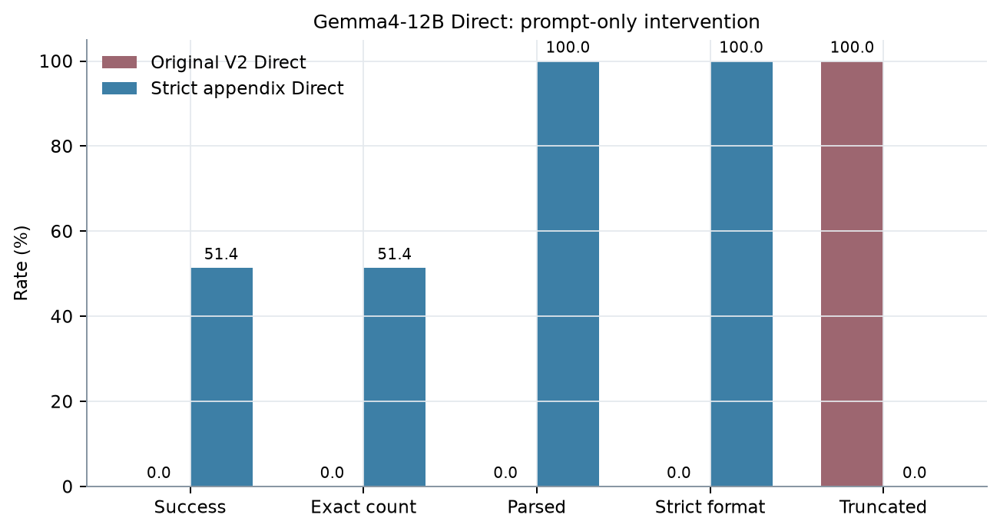

本节结论：主表有 14,500 条且每格平衡；但它是 current-prompt composite。Gemma4-12B Strict Direct 与其他模型旧 Direct 的横向比较必须谨慎，最可靠用途是模型内部和同 stimulus 的 mode 比较。
2. 四种 Prompt 与输出约束
共用前半段
You will need to count all city-score audit records in the passage below.
A city-score audit record names one city and gives that city's numeric score.
<passage>
{PASSAGE}
</passage>
Direct（正式 V2，除当前 Gemma4-12B appendix 外）
How many city-score audit records are in the passage?
In the final answer, output exactly one line:
Total: <integer>
Gemma4-12B Strict Direct appendix
How many city-score audit records are in the passage?
Do not explain, reason aloud, quote, or list any records.
Your entire response must be exactly one line:
Total: <integer>
Index（V2.1 replacement）
How many city-score audit records are in the passage?
List each occurrence once, in passage order.
Begin the first item with "1. ", the second with "2. ", and continue with ordinary digits.
After each number, write the actual city name, then ": ", then the actual numeric score.
Use only actual values from the passage; do not output placeholders or angle brackets.
Then report the number listed:
Total: <integer>
Do not include any other text.
Bullet（V2.1 replacement）
How many city-score audit records are in the passage?
List each occurrence once, in passage order.
Begin each item with "-", then write the actual city name, then ": ", then the actual numeric score.
Use only actual values from the passage; do not output placeholders or angle brackets.
Then report the number listed:
Total: <integer>
Do not include any other text.
Native Thinking
How many city-score audit records are in the passage?
Reason concisely without repeating or restarting.
Stop as soon as you determine the count, then output exactly one line:
Total: <integer>
观测到的机制：The weak Direct instruction triggered an explicit scan/list; the 64-token budget ended before Total.
To count the city-score audit records, I will scan the passage for the specific format "city name received a score of [number]" or "city name received a score of [number]" within the context of a "city score audit."
1. "In the 2024 city score audit
观测到的机制：The stored output exposed a <|channel>thought block. The frozen parser retained it in final_text, so an often-correct count failed the Total-only gate.
<|channel>thought
* Goal: Count all "city-score audit records".
* Definition: A record naming one city and giving its numeric score.
* Instruction: Reason concisely, stop when count is determined, and output "Total: <integer>".
* "...In the 2024 city score audit, Athens received a score of 83." (Athens, 83) - *1*
* "...In the 2024 city score audit, Lahore received a score of 64." (Lahore, 64) - *2*
* "...In the 2024 city score audit, Mexico City received a score of 72." (Mexico City, 72) - *3*
* "...In the 2024 city score audit, Tokyo received a score of 56." (Tokyo, 56) - *4*
* "...In the 2024 city score audit, Zagreb received a score of 100." (Zagreb, 100) - *5*
* "...In the 2024 city score audit, London received a score of 86." (London, 86) - *6*
* "...In the 2024 city score audit, Guangzhou received a score of 94." (Guangzhou, 94) - *7*
* "...In the 2024 city score audit, Seoul received a score of 78." (Seoul, 78) - *8*
* "...In the 2024 city score audit, Buenos Aires received a score of 85." (Buenos Aires, 85) - *9*
* "...In the 2024 city score audit, Kuala Lumpur received a score of 91." (Kuala Lumpur,
Qwen3-1.7B · Index · parse_failure
观测到的机制：The model listed records but omitted the required final Total line.
观测到的机制：Despite non-thinking mode, the weak formal Direct wording elicited explanation and enumeration; 64 tokens were insufficient.
To determine the number of city-score audit records in the passage, we need to identify all instances where a city is mentioned along with its numeric score.
Here is the list of city-score audit records found in the passage:
1. Manila - 52
2. Sarajevo - 80
3.
GLM-4-9B-0414 · Index · wrong_count
观测到的机制：The syntax was valid, but one or more dispersed records were omitted.
观测到的机制：The reasoning trace began a long scan/list and did not reach the final line within 4,096 tokens.
<think>
Alright, let me tackle this problem step by step. So, the user wants me to count all the city-score audit records in the provided passage. A city-score audit record is defined as naming one city and giving that city's numeric score.
First, I need to scan through the entire passage carefully. The passage is quite lengthy, so I'll need to look for specific mentions of city names followed by their scores.
I notice that there are several instances where city names are mentioned along with scores. For example, in October 2011, there's a mention of Osaka receiving a score of 91. Later on, other cities like Delhi, Bangkok, and Reykjavik are also mentioned with their respective scores.
Let me list out all the city-score pairs I find:
1. October 2011: Osaka received a score of 91.
2. October 2011: Delhi received a score of 99.
3. June 2021: Oslo received a score of 68.
4. October 2011: Bangkok received a score of 56.
5. October 2011: Reykjavik received a score of 77.
Wait a minute, I think I missed some. Let me double-check the passage.
In the October 2011 section, there are multiple cities mentioned:
- October 2011: Kaohsiung received a score of 78.
- October 2011: Chengd
最主要的三类机制可以被区分：①检索/计数错误——输出格式正确但 Total 错；②输出控制失败——循环、冗长解释或未写 Total；③评估接口不匹配——内容中已有正确 Total，但冻结 parser 仍把额外 channel/text 判为格式错误。下面的因果表述只限于输出证据，不推断模型内部神经机制。
本节结论：低分不能统一解释为“不会数数”。Qwen3-1.7B 的枚举失败主要是生成退化，GLM-4 Direct 主要是系统性漏计，Gemma4-12B Native 的低 registered success 则主要是 thought-channel/严格格式不匹配。
6. Gemma4-12B Direct 的受控 Prompt 干预

图 5. 同一 500-stimulus 设计中，旧 Direct 与 Strict Direct 的各门槛比例。Truncated 越低越好，其余四项越高越好。